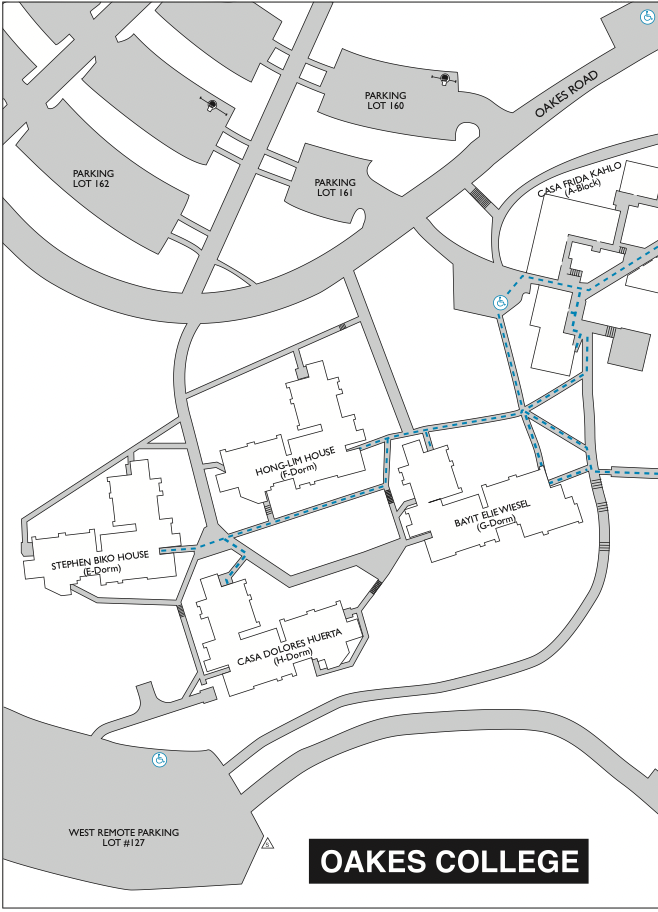

📊 Statistics
Oake's cafe 57/100 (114/200)
Oake's classes 62/100 (124/200)
Oake's lounges 69/100 (138/200)
Oake's quad 74/100 (148/200)
Oake's location 47.5/100 (95/200)
Oake's parking 75.5/100 (151/200)

Student Testimonals
-
📌”I have a nice view from my room, so I often study there and I live by the cafe, so that’s nice.”
-
📌”I am not from Oakes, but I like the environment and the vibe and the feel here.”
-
📌”This place is honestly a hidden gem, and I don’t think a lot of the other colleges realize that. It’s kinda away from everything, so it’s a nice and peaceful place to be to study. And plus, the cafe is amazing.”
-
📌”I do like the food here better than anywhere else on campus. By far the best.”
-
📌”I do not think that people fully appreciate Oakes and while I before wished I ended up in Stephenson, living here and realizing just how much this place has to offer, I’m glad I ended up here.”
-
📌”Oakes is the best place for everything. The cafe serves good food and is a good place to study. I also really enjoy eating and studying in my room, as well. There’s a nice view from the window, so I see a nice bit of the outside, which helps set my mind at ease when hard assignments come up. I can see the forest and the sea at the same time, and I’m grateful for that.”